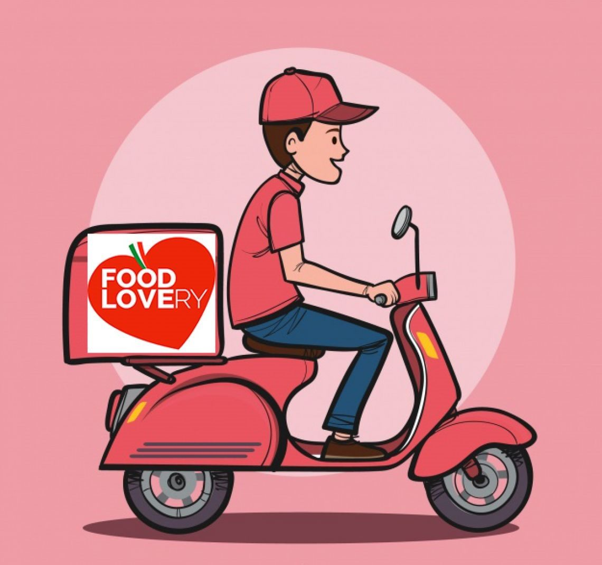

#APPROFONDIMENTI👥
⬆️📌 FOOD LOVERY - Cos'è e come funziona realmente?
I suoi servizi e le sue opportunità.
✅ Food Lovery è una piattaforma di Food Delivery nata nel 2018, presente in 35 zone del centro Italia con oltre 700 ristoranti già affiliati e 65 nuove zone di prossima apertura.
✅ Per motivi a noi noti che in questi giorni ci toccano particolarmente, il mercato del cibo a domicilio sta registrando vendite importanti. Nel primo semestre del 2020 Food Lovery ha visto un incremento del suo fatturato del 400% rispetto al 2019.
✅ Il suo modello di Business si basa sulla classificazione dei servizi divisi per settore: Casa madre, Franchising, City Manager o altre figure specializzate che curano il Digital marketing e/o ricerca clienti ed infine i Driver, coloro che si occupano della consegna degli ordini. Questa classificazione è molto produttiva e rende possibile l'efficienza di ogni singolo servizio.
✅ Proprio per questo sono disponibili 3 diverse App, divise per settore d'appartenenza:
- Food Lovery - per l'utilizzatore del servizio, il cliente finale.
- Food Lovery Partner - per l'esercente, il ristorante che offre il servizio.
- Food Lovery Driver - per il personale che effettua la consegna.
L’intero processo ordine-accettazione-pickup-consegna è monitorato e tracciato dal sistema per la migliore comunicazione tra cliente, ristorante, driver e servizio clienti.
✅ La qualità dei servizi si basa su:
- Selezione dei ristoranti
- Consegne rapide (da 10 minuti) con controllo logistico
- Servizi e supporto centralizzati in tutte le fasi di lavoro
- Marchio italiano in forte crescita
✅ Questo nuovo business oltre a dare un ottimo servizio è un mercato in via d'espansione ed a fronte di questo, offre moltissime opportunità di lavoro, crescita e d'investimento.
✅ E' pertanto possibile, direttamente sul sito internet, fare le seguenti richieste:
- Aprire un Franchising
- Diventare loro Partner (per Esercenti/Ristoratori che vorrebbero usufruire dei loro servizi)
- Diventare City Manager (non prevede nessun investimento)
- Diventare Key Manager (ricerca clienti)
- Diventare Social Media Manager (Digital Marketing)
- Diventare Driver (Ideale opportunità per chi desidera un lavoro flessibile, massima autonomia e lavorare in base alla propria disponibilità o come secondo lavoro).
In conclusione Food Lovery: un nuovo servizio, ben costruito e strutturato, utile e necessario in questo periodo, ed in forte crescita. Il mercato sta cambiando, bisogna saper scegliere e cogliere le opportunità.
Se lo desideri, iscriviti ai mie canali social per restare aggiornato ⬇️
Social MediaInoltre se hai trovato utile ed interessante questo articolo, non esitare a condividerlo, a lasciare un tuo mi piace 👍, o seguire la mia pagina Facebook per sostenermi e continuare ad informare. Grazie anticipatamente a chi vorrà farlo.